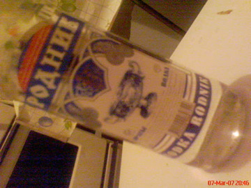

Posts from kyrgyzstan
キルギスタンで散歩
22 March 2007
w.tknv
kyrgyzstan
Japanese
vodka
beer
これは、標高1500mにあるイシシクル湖(Issyk-kul、kulがキルギスタン語で湖なんですが)の魚の薫製、 ビールのつまにみ最高！

Read more ...
こっちが、うまい！ショーロ
18 February 2007
w.tknv
kyrgyzstan
Japanese
Shoro
Шоро
Read more ...
Cannot, today is Monday
Recent Posts
28 March - IPv6 address name
20 June - チーム・マイナス 6% なんだって！！！
07 April - ラグマンとアシュラムフード
03 April - 中央アジアで、生活はいかがですかー
28 March - この暑さでやられたのか！！
Tags
A&W
Baamee
Bangkok
Burger King
Bus
Dad's
Dr.Pepper
Gapao Gai Kai Dao Mai Suk
ID
IPv6
Kamakura
Kvass
Malt
Nonsense
Python
Shoro
Tom Yam
ashlan-fu
beer
laghman
tube
vodka
wine
Шоро
საქართველო
夏バテ
Locations
Asok (3)
Ban Khae (2)
Bangkok (1)
Charoen Krung (1)
Hua Lamphong Station (1)
Kazakhstan (2)
Makkasan (1)
Petchkasem (1)
Pratu Naam (1)
Saphan Phut (1)
Tokyo (1)
Turkestan (2)
Yaowarat (2)
Yuigahama (1)
kyrgyzstan (2)
Languages
English (4)
Japanese (20)
Categories
network (1)
Archives
2018 (1)
2007 (9)
2006 (3)
2005 (11)
Quick search